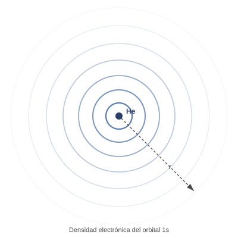
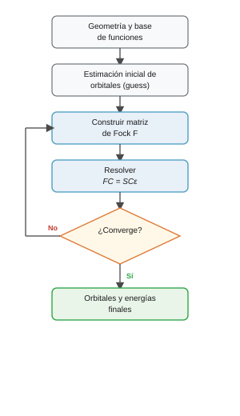

El método de Hartree-Fock#
Introducción#
La ecuación de Schrödinger no admite solución matemática exacta para sistemas con más de un electrón debido al acoplamiento que genera la repulsión electrostática entre ellos. El método de Hartree-Fock aborda este problema mediante la aproximación de campo medio, sustituyendo las interacciones instantáneas individuales por un potencial promediado en el espacio. Esta simplificación permite que programas como Gaussian determinen los orbitales moleculares y la energía electrónica total mediante un procedimiento iterativo autoconsistente.
El problema: electrones que se repelen#
En un átomo con dos electrones como el helio (\(Z=2\)), el operador hamiltoniano exacto incluye la energía cinética de cada electrón, su atracción hacia el núcleo y la repulsión electrostática entre ambos:
El operador monoelectrónico \(\hat{h}(i)\) describe el movimiento del electrón \(i\) bajo el potencial atractivo del núcleo, sin considerar al otro electrón:
Si el término de repulsión coulómbica \(1/r_{12}\) no existiera, la ecuación se resolvería separando variables exactamente como el producto de dos átomos hidrogenoides. Sin embargo, \(1/r_{12}\) acopla las posiciones instantáneas de ambos electrones: determinar la distribución espacial de uno exige conocer la del otro en cada instante. Esta dificultad se extiende a cualquier sistema polielectrónico y constituye el reto central de la estructura electrónica.
Nota
El término \(1/r_{12}\) acopla las coordenadas espaciales de los electrones e impide resolver analíticamente la ecuación de Schrödinger para cualquier átomo o molécula con dos o más electrones.
La idea de Hartree-Fock: el campo medio#
Para desacoplar las ecuaciones, la aproximación de Hartree-Fock sustituye las repulsiones instantáneas entre pares de electrones por un potencial electrostático promedio generado por el conjunto de la nube electrónica. Cada electrón se mueve entonces en el campo creado por el núcleo y por la densidad promediada de los demás electrones.
Bajo esta simplificación, cada electrón satisface una ecuación de autovalores monoelectrónica gobernada por el operador de Fock \(\hat{f}\):
Para el átomo de helio, donde los dos electrones ocupan el mismo orbital espacial \(\phi_1\) con espines opuestos, el operador de Fock adopta la forma:
donde \(\hat{J}_1\) representa el potencial electrostático promedio generado por la nube del otro electrón:
Nota
Al promediar la repulsión interelectrónica se desprecian las correlaciones instantáneas entre las posiciones de los electrones (correlación electrónica). De acuerdo con el teorema variacional, la energía calculada en el límite Hartree-Fock es siempre una cota superior a la energía exacta no relativista del sistema.
Orbitales: combinación lineal de funciones de base (LCAO)#
El estado espacial de cada electrón se describe mediante un orbital \(\phi_i(\mathbf{r})\). En el helio en su estado fundamental, ambos electrones ocupan el orbital \(\phi_1\) con espines opuestos (\(\alpha\) y \(\beta\)).
Dado que la forma matemática exacta de \(\phi_i(\mathbf{r})\) no se conoce a priori, se expande como una combinación lineal de \(K\) funciones de base predefinidas \(\{\chi_\mu\}\) (habitualmente funciones gaussianas centradas en los núcleos):
Resolver el problema cuántico equivale a determinar los coeficientes numéricos \(C_{\mu i}\) que minimizan la energía total del sistema. La figura muestra la densidad electrónica del orbital 1s resultante para el átomo de helio.


Las ecuaciones de Roothaan-Hall: el ejemplo del Helio con dos orbitales#
Al sustituir la expansión LCAO en la ecuación de Fock y proyectar sobre cada función de base, las ecuaciones integrodiferenciales se transforman en un problema de autovalores matricial generalizado:
Consideremos el átomo de helio descrito con una base de dos funciones tipo s (\(\chi_1\) y \(\chi_2\)), por ejemplo dos funciones gaussianas con diferente exponente para permitir que la nube electrónica se expanda o contraiga radialmente. Cada orbital espacial se expresa como:
El sistema matricial de dimensión 2×2 adopta la forma explícita:
Cada matriz tiene un significado físico directo:
Matriz de solapamiento \(\mathbf{S}\): Describe la no ortogonalidad espacial entre las dos funciones de base:
Como las funciones están normalizadas, los elementos diagonales valen 1 (\(S_{11} = S_{22} = 1\)). El término cruzado representa la integral de solapamiento entre ambas:
Matriz de Fock \(\mathbf{F}\): Contiene la energía efectiva de un electrón en cada función de base (\(F_{11}, F_{22}\)) y el acoplamiento mutuo (\(F_{12} = F_{21}\)):
Sus elementos se obtienen integrando el operador de Fock sobre la base:
Matriz de coeficientes \(\mathbf{C}\): Cada columna define uno de los orbitales espaciales:
La primera columna \(\begin{pmatrix} C_{11} \\ C_{21} \end{pmatrix}\) contiene los pesos de \(\chi_1\) y \(\chi_2\) en el orbital ocupado \(\phi_1\) (HOMO). La segunda columna \(\begin{pmatrix} C_{12} \\ C_{22} \end{pmatrix}\) contiene los coeficientes del orbital virtual \(\phi_2\) (LUMO).
Matriz de energías orbitales \(\boldsymbol{\varepsilon}\): Es una matriz diagonal que contiene los autovalores energéticos:
donde \(\varepsilon_1 = \varepsilon_{\text{HOMO}}\) es la energía del orbital ligado (negativa) y \(\varepsilon_2 = \varepsilon_{\text{LUMO}}\) es la energía del primer orbital desocupado.
Nota
El caso del helio frente a sistemas reales: matrices de dimensión \(K \times K\) Conviene no confundir este modelo 2×2 con la dimensión real de los cálculos moleculares:
¿Por qué 2×2 en este ejemplo? Porque hemos elegido deliberadamente una base mínima de \(K = 2\) funciones para un átomo con 2 electrones. Al haber dos funciones de base se obtienen exactamente 2 orbitales: 1 orbital ocupado (con los dos electrones apareados) y 1 orbital virtual desocupado.
Dimensiones en sistemas reales: En cualquier cálculo molecular estándar, el número de funciones de base \(K\) es mucho mayor (\(K = 30, 80, 300\dots\)). Las matrices \(\mathbf{F}\), \(\mathbf{S}\) y \(\mathbf{C}\) son siempre matrices cuadradas de dimensión \(K \times K\).
Distribución de orbitales ocupados y virtuales: Para un sistema neutro de capa cerrada con \(N\) electrones y \(K\) funciones de base, el método genera siempre \(K\) orbitales espaciales. Solo las primeras \(N/2\) columnas de la matriz \(\mathbf{C}\) corresponden a orbitales ocupados (hasta el HOMO \(\phi_{N/2}\)); las restantes \(K - N/2\) columnas corresponden a orbitales virtuales desocupados (empezando por el LUMO \(\phi_{N/2 + 1}\)).
El ciclo SCF: resolver por iteración#
Existe una dependencia circular: para calcular la matriz de Fock \(\mathbf{F}\) se necesita conocer la densidad electrónica (los coeficientes \(\mathbf{C}\)), pero para obtener \(\mathbf{C}\) se debe diagonalizar el sistema \(\mathbf{F}\mathbf{C} = \mathbf{S}\mathbf{C}\boldsymbol{\varepsilon}\).
Esta circularidad se resuelve iterativamente mediante el método del campo autoconsistente (SCF, Self-Consistent Field):
Se genera una estimación inicial de los coeficientes (guess \(\mathbf{C}^{(0)}\)).
Con esos coeficientes se construye la matriz de Fock \(\mathbf{F}^{(k)}\).
Se diagonaliza el sistema \(\mathbf{F}^{(k)}\mathbf{C} = \mathbf{S}\mathbf{C}\boldsymbol{\varepsilon}\) para obtener nuevos coeficientes \(\mathbf{C}^{(k+1)}\) y nuevas energías \(\boldsymbol{\varepsilon}^{(k+1)}\).
Se comprueba si la variación de energía y densidad respecto al paso anterior es menor que la tolerancia fijada (por ejemplo \(10^{-6}\) Ha). Si no ha convergido, se vuelve al paso 2.


Energías: orbital vs total#
Los autovalores \(\varepsilon_i\) obtenidos al diagonalizar la matriz de Fock corresponden a las energías de cada orbital individual, no a la energía total del sistema.
Para los dos electrones del helio en el orbital \(\phi_1\), la energía orbital contiene la energía monoelectrónica \(h_{11}\) y la repulsión electrostática con el otro electrón \(J_{11}\):
Si sumáramos directamente las energías orbitales de ambos electrones:
estaríamos contando la repulsión interelectrónica \(J_{11}\) dos veces. Por tanto, la energía electrónica real resta esa interacción duplicada:
En una molécula con varios núcleos, la energía total añade además la repulsión coulómbica internuclear \(V_{NN}\):
Este valor es exactamente el que Gaussian imprime en la línea SCF Done del archivo .log.
Advertencia
La energía que aparece en la línea SCF Done del log de Gaussian es la energía total del sistema \(E_{\text{total}}\), no la energía de un orbital individual \(\varepsilon_i\).
Limitaciones de HF: la correlación electrónica#
Como el método de Hartree-Fock sustituye las interacciones instantáneas por un campo medio, asume que la probabilidad de encontrar un electrón en un punto es independiente de la posición instantánea del otro. La diferencia entre la energía de Hartree-Fock con base infinita (\(E_{\text{HF}}^{\text{limit}}\)) y la energía exacta no relativista (\(E_{\text{exacta}}\)) define la energía de correlación:
Dado que \(E_{\text{HF}}^{\text{limit}} \ge E_{\text{exacta}}\) por el principio variacional, la energía de correlación es siempre negativa (\(E_{\text{corr}} \le 0\)). Aunque suele representar menos del 1 % de la energía total, es decisiva para calcular con exactitud energías de enlace, barreras de reacción y transiciones espectroscópicas.
Bibliografía#
Gaussian 16, Revision A.03, M. J. Frisch, G. W. Trucks, H. B. Schlegel et al., Gaussian, Inc., Wallingford CT, 2016.
Szabo, A.; Ostlund, N. S. Modern Quantum Chemistry. Dover, 1996.
La función de onda antisimétrica y el determinante de Slater
El principio de exclusión de Pauli exige que la función de onda electrónica sea antisimétrica frente al intercambio de dos electrones cualesquiera:
Para dos electrones con espines opuestos en el orbital espacial \(\phi_1\), la función de onda se expresa como un determinante de Slater:
Intercambiar las coordenadas de los dos electrones equivale a permutar dos filas del determinante, lo que invierte automáticamente su signo y garantiza el principio de Pauli.
Energía de correlación y métodos post-HF
A partir de la función de onda de Hartree-Fock se han desarrollado diversos métodos para recuperar la correlación electrónica y superar la aproximación de campo medio. La teoría de perturbaciones de Møller-Plesset de segundo orden (MP2) añade correcciones dinámicas a la energía con un coste computacional moderado. Por su parte, métodos como Coupled Cluster con excitaciones simples y dobles (CCSD) ofrecen una precisión muy superior a expensas de un esfuerzo de cálculo elevado. Estos esquemas se analizan con detalle en una sección teórica posterior (Más allá de Hartree-Fock).